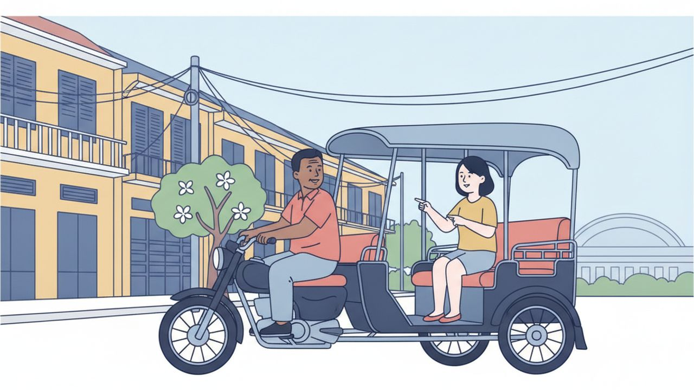

ロールプレイング ⑥
トゥクトゥクでの道案内

場面設定
プノンペンの街角。日本人のお客様（女性）が、通りがかりのトゥクトゥクを止めて値段を交渉し、乗ってから運転手に道を伝えて目的地まで行く場面。カンボジアではアプリで呼ぶほかに、こうして街で交渉して乗ることも多い。運転手は年上の男性が多いので、ពូ（おじさん）と呼びかける。
登場人物: トゥクトゥクの運転手（ពូ、年上の男性を想定）／お客様（បង、女性を想定）
保存されるファイル名: 06_トゥクトゥクでの道案内_v1.0_20261105.pdf
会話
お客様
ជម្រាបសួរ!
ពូ ខ្ញុំចង់ទៅផ្សារទួលទំពូង។
យកប៉ុន្មានដែរ?
トゥクトゥクの運転手
ជម្រាបសួរបង។
មួយម៉ឺនរៀលបង។
お客様
ថ្លៃណាស់។
ប្រាំបីពាន់រៀលបានអត់?
トゥクトゥクの運転手
បានបង។
អញ្ជើញបង។
お客様
អរគុណពូ។
សូមជិះយឺតៗបន្តិច។
トゥクトゥクの運転手
បាទ។
តើត្រូវបត់ទៅខាងណាដែរ?
お客様
ដល់ផ្លូវខាងមុខបត់ស្តាំ។
トゥクトゥクの運転手
បត់ទៅខាងណាទៀតដែរ?
お客様
សូមជិះទៅត្រង់បន្តិចទៀត។
បន្ទាប់ពីនោះបត់ឆ្វេង។
トゥクトゥクの運転手
ឈប់នៅត្រង់ណាដែរ?
お客様
ឈប់នៅមុខផ្សារនោះ។
ឆ្ងាយទេ?
トゥクトゥクの運転手
អត់ឆ្ងាយទេបង។
ប្រហែលប្រាំនាទីទៀត។
トゥクトゥクの運転手
ដល់ហើយបង។
お客様
អរគុណពូ។
នេះលុយមួយម៉ឺនរៀល។
トゥクトゥクの運転手
ខ្ញុំអាប់ជូនបងពីរពាន់រៀល។
អរគុណច្រើនបង។
お客様
អរគុណដែលបានជូនខ្ញុំមក។
ថ្ងៃក្រោយខ្ញុំនឹងហៅពូម្ដងទៀត។
フリートークにつながる質問
会話のあと、役を離れてこの質問で話を広げてみてください。答えは思いつく範囲で構いません。
質問 1
តើបងធ្លាប់ជិះតុកតុកទេ?
質問 2
ពីផ្ទះទៅកន្លែងធ្វើការ
តើបងជិះអ្វីទៅ?
質問 3
តើបងធ្លាប់វង្វេងផ្លូវនៅភ្នំពេញទេ?
扱った単語（51語）
| # | クメール語 | 読み方 | 意味 |
|---|---|---|---|
| 1 | ពូ | プー | おじさん（年上の男性への呼びかけ） |
| 2 | ចង់ | チョン | したい |
| 3 | ទៅ | タウ | 行く |
| 4 | ផ្សារ | プサー | 市場 |
| 5 | យក | ヨーク | 取る |
| 6 | ប៉ុន្មាន | ポンマーン | いくつ |
| 7 | ដែរ | ダエ | 〜も（ក៏と対で使う）・文末に付けて問いを和らげる |
| 8 | ម៉ឺន | ムーン | 万 |
| 9 | រៀល | リエル | リエル |
| 10 | ថ្លៃ | タライ | 値段・高い |
| 11 | ណាស់ | ナハ | とても |
| 12 | ប្រាំបី | プラム・バイ | 8（5＋3） |
| 13 | ពាន់ | ポアン | 千 |
| 14 | បាន | バーン | できる・手に入れる |
| 15 | អញ្ជើញ | オンチューニュ | どうぞ〜なさる（丁寧に勧める） |
| 16 | សូម | ソーム | 〜してください（動作をお願いする） |
| 17 | ជិះ | チヒ | 乗る |
| 18 | យឺតៗ | ユート・ユート | ゆっくり |
| 19 | បន្តិច | ボンティ | 少し |
| 20 | បាទ | バート | はい（男性） |
| 21 | ត្រូវ | トラウ | すべき |
| 22 | បត់ | ボット | 曲がる |
| 23 | ខាង | カーン | 側 |
| 24 | ដល់ | ドル | 到着する |
| 25 | ផ្លូវ | プラウ | 道 |
| 26 | ខាងមុខ | カーン・モック | 〜の前 |
| 27 | ស្តាំ | スダム | 右 |
| 28 | ទៀត | ティエット | もう〜・さらに |
| 29 | ត្រង់ | トロン | まっすぐ・〜のところ |
| 30 | បន្ទាប់ពី | ボントアップ・ピー | 〜のあとで |
| 31 | ឆ្វេង | チュヴェーン | 左 |
| 32 | ឈប់ | チョップ | 止まる |
| 33 | មុខ | モック | 顔・〜の前 |
| 34 | ឆ្ងាយ | チガーイ | 遠い |
| 35 | ប្រហែល | プロハエル | 〜くらい・たぶん |
| 36 | នាទី | ニアティー | 分（時間の単位） |
| 37 | ហើយ | ハウイ | もう〜した・そして |
| 38 | លុយ | ルイ | お金 |
| 39 | អាប់ | アップ | おつりを渡す |
| 40 | ជូន | チューン | 差し上げる・お返しする |
| 41 | ច្រើន | チュラウン | たくさんの |
| 42 | ដែល | ダエル | 〜である（説明を足す）・〜したことがある |
| 43 | មក | モーク | 来る |
| 44 | ថ្ងៃក្រោយ | タガイ・クラオイ | 今度・次回 |
| 45 | នឹង | ヌン | （未来を表す） |
| 46 | ហៅ | ハウ | 呼ぶ |
| 47 | ម្ដងទៀត | ムドン・ティエット | もう一度 |
| 48 | ធ្លាប់ | トロアップ | 〜したことがある（慣れている） |
| 49 | ផ្ទះ | プテアッ | 家 |
| 50 | កន្លែងធ្វើការ | コンラエン・トブー・カー | 職場 |
| 51 | វង្វេងផ្លូវ | ヴォンヴェーン・プラウ | 道に迷う |
表現・文法の解説
1呼びかけは相手で変える。運転手は ពូ
トゥクトゥクの運転手は年上の男性が多いので ពូ（読み: プー、おじさん）と呼ぶ。お店の人や同じくらいの年の人には បង（ボーン）を使う。ពូ は文の最後に置いても自然で、អស់ប៉ុន្មានពូ?（いくらですか、おじさん？）のように使う。
2道を伝える語は3つだけ
ស្តាំ（スダム、右）／ឆ្វេង（チュヴェーン、左）／ត្រង់（トロン、まっすぐ）。曲がるときは បត់（ボット）と組み合わせて បត់ស្តាំ（右に曲がる）、まっすぐなら ជិះទៅត្រង់（まっすぐ行く）。これだけで道案内ができる。
3人に何かを頼むときは文末に បន្តិច を置く
សូមជិះយឺតៗបន្តិច（少しゆっくり走ってください）、សូមឈប់ចាំខ្ញុំបន្តិច（ここで止まって待っていてください）のように、បន្តិច（ボンティ、少し）を文末に置く形がよく使われる。បន្តិចទៀត（もう少し）と重ねると「もうちょっとだけ」になる。
4おつりは អាប់
អាប់（アップ）は「おつりを渡す」。ខ្ញុំអាប់ជូនបង…（〜をおつりでお返しします）が定型。名詞としては លុយអាប់（ルイ・アップ、おつり）。細かいお金が無いときは អត់មានលុយរាយ（オッ・ミエン・ルイ・リエイ）と言う。
5リエルの数え方
1,000は ពាន់（ポアン）、10,000は ម៉ឺន（ムーン）。8,000は ប្រាំបីពាន់（プラム・バイ・ポアン＝5+3の千）、10,000は មួយម៉ឺន（ムオイ・ムーン）。6〜9は「5＋数」で作るので、8は ប្រាំបី（プラム・バイ）になる。
ほかの学び方・活動
YouTube
動画でクメール語を学ぶ
会話・発音・聞き流しの動画を出しています。この教材と同じテーマの「聞き流し」もここにあります。
公式LINE
レッスンの相談
レッスンに興味を持たれた方は、まず面談をさせていただきます。公式LINEを追加してご連絡ください。